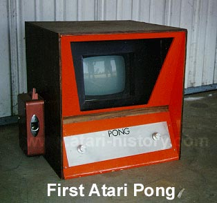

|
The Original Atari Pong
Almost everyone who has ever heard of or has ever played a video game
and has heard about the famous Atari Pong and is familiar with its upright
5 1/2 foot tall cabinet with bright yellow face that gobbled up almost
as many quarters as Pac Man gobbled up power pellets.
Well the original Atari Pong that started it all at the famous Andy Capps
Bar in California was not the production run unit that so many gamers are
familiar with.

The original Atari Pong was in fact a small 2 foot high unit that was placed
on a barrel at Andy Capps and caused the infamous phone call from Andy
Capps owner to Atari telling them to come take their game back because
the thing was broke. Allan Alcorn, the designer drove out to
Andy Capps and upon examination found that the coin mech had overflowed
with quarters and had shorted out. From there on it was
history.
The Original Atari Pong and also the first several hundred production full upright Atari Pongs used generic off the shelf Hitachi Black & White 13" Television sets as a monitor since monitors were not readily available. The front of the units monitor bezel was made from thick cardboard cut-outs to shape around the TV set.
|